Overview
In this conceptual project, I aim to develop a Customer Relationship
Management (CRM) web app that offers a fully customizable dashboard
and integrates essential functions such as in-app email, calendar,
and task planning. This case study will explore the design and
development of a comprehensive CRM solution tailored to meet the
diverse needs of businesses. By leveraging user-centric design
principles and advanced technology, the goal is to create a seamless
and intuitive platform that enhances sales and customer management
processes.
My Role: As sole designer I was responsible of user
experience & interface design.
Project Duration: 4 weeks
Process
- Research
- Ideation
- Design
Tools
- Figma
- Photoshop
- Illustrator
Challenge: The challenge I faced in developing my CRM web app with fully customizable features was finding the right balance between flexibility and simplicity. I wanted to offer customization options without overwhelming users with a complex interface.
Solution: To address this, I implemented a user-friendly interface that allows users to personalize their CRM experience easily. I incorporated a modular design system, enabling users to choose and arrange dashboard widgets according to their preferences. With intuitive drag-and-drop functionality, users can customize the layout and easily add or remove widgets.
 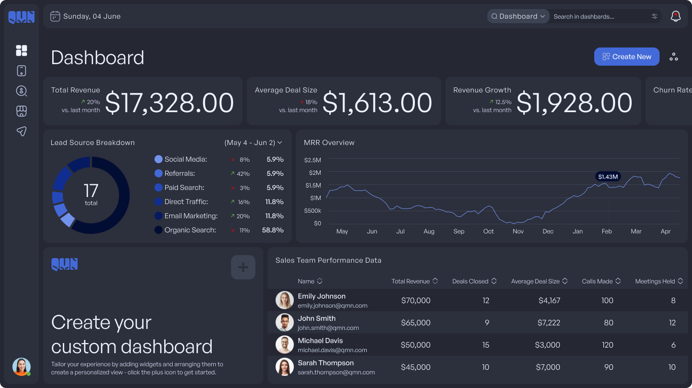
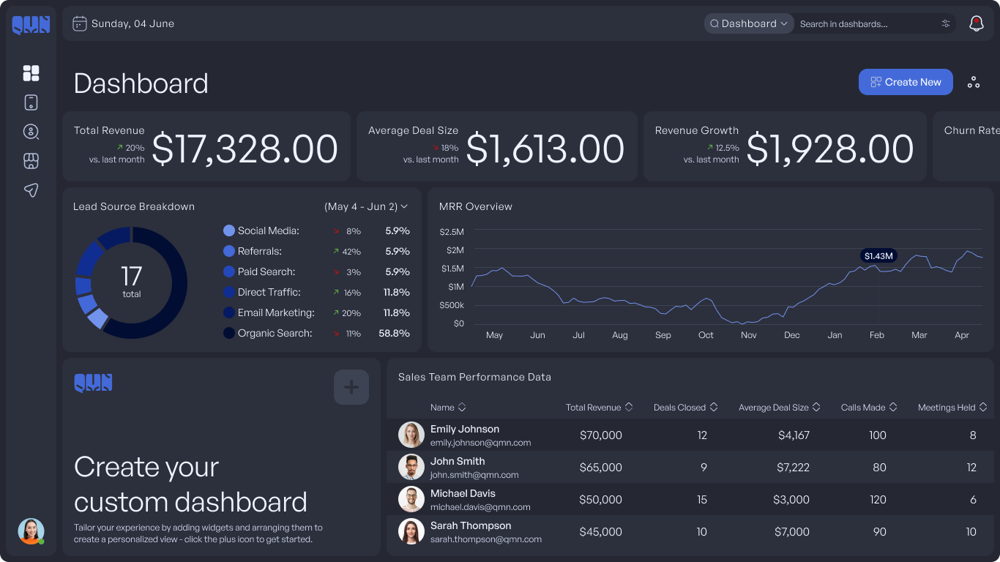


 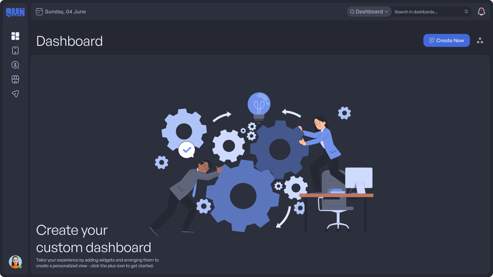
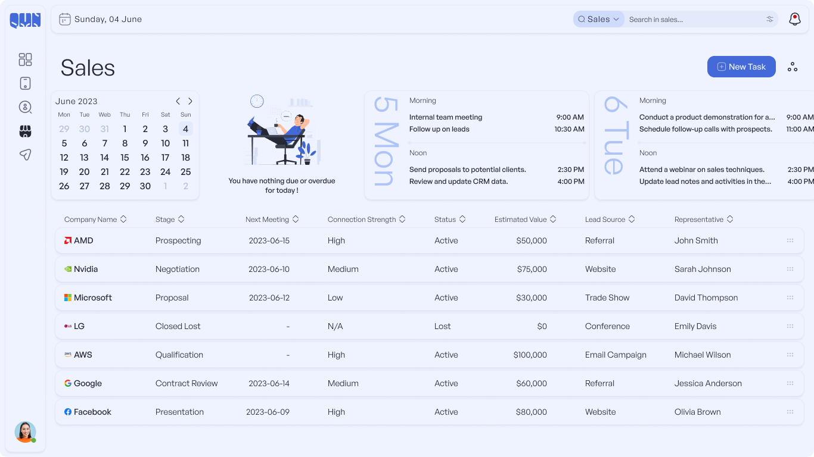
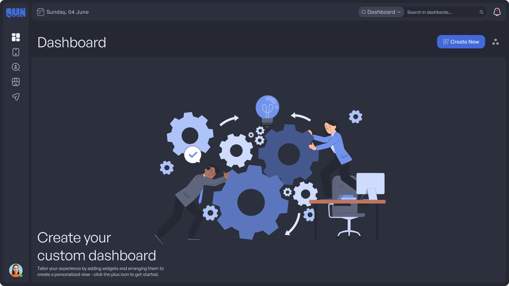
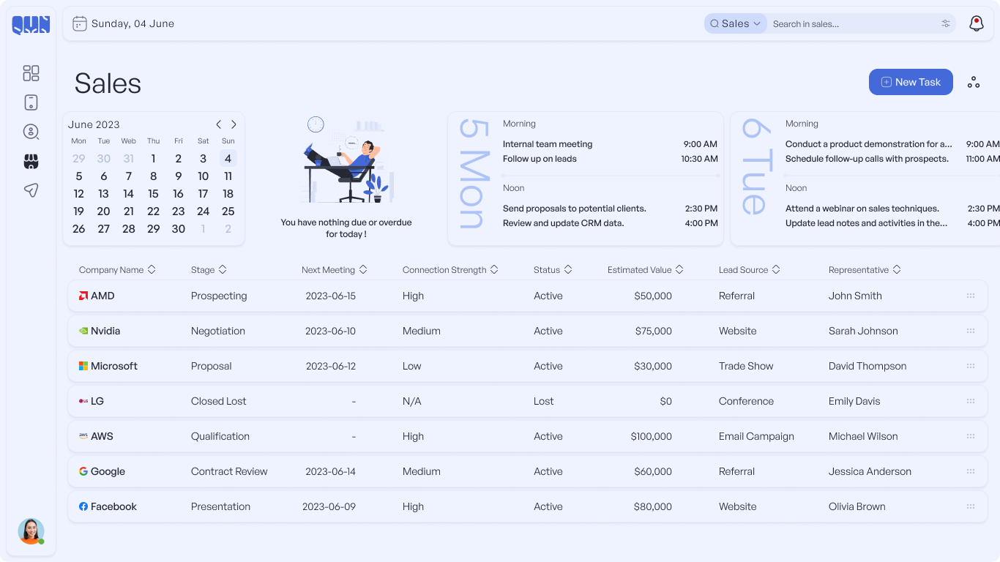

 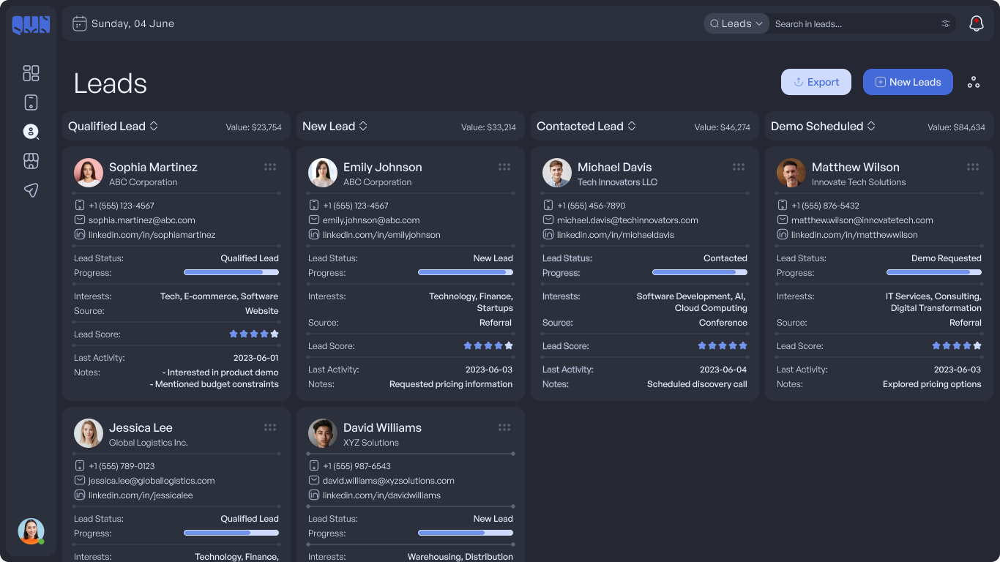
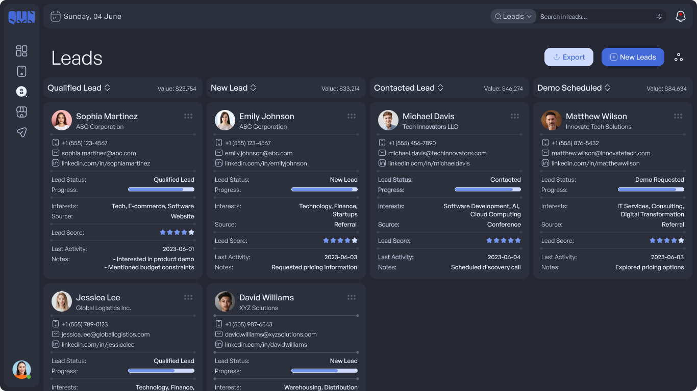
 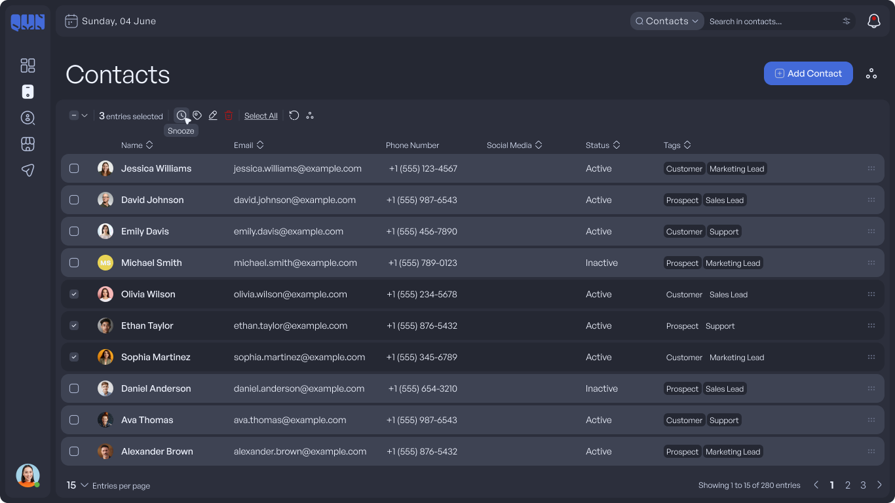
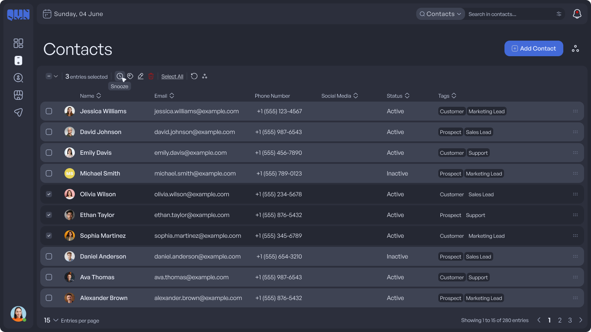


 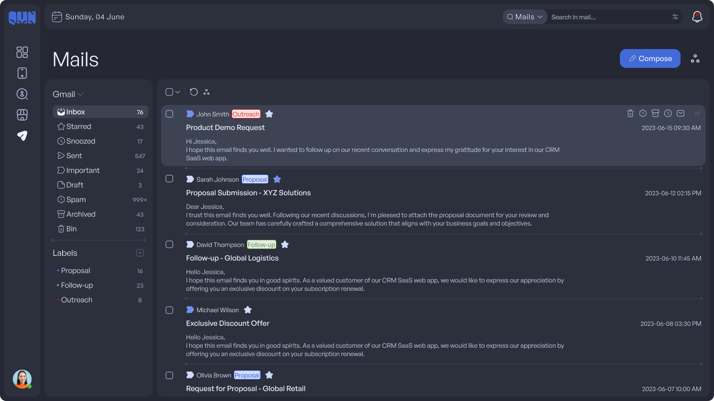
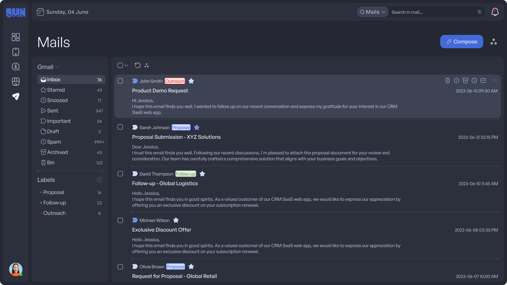


Research
To familiarize myself with CRM technologies and designing a media management dashboard, I conducted secondary research using Attio, Customer.io, and Zendesk. This involved reviewing screenshots of similar products and analyzing their features. The research provided valuable insights and helped me understand client jargon for effective communication during the project. Overall, it equipped me with the knowledge needed to approach the design with confidence.


Ideation
Based on a comprehensive understanding of user needs and objectives throughout the information architecture, I embarked on the ideation phase. Creating user stories provided a clear vision and direction for the design, ensuring that every aspect of the web app focused on meeting user goals and requirements. By aligning my design concepts with user stories, I aimed to create a powerful and intuitive web app that fulfills users' objectives and empowers them to achieve their desired outcomes across the entire application.
Information Architecture
- Overview: Provides a high-level summary of key metrics, such as total revenue, sales performance, and upcoming tasks.
- Customization: Allows users to personalize their dashboard by selecting and arranging widgets according to their preferences.
- Reports: Provides access to detailed reports and analytics for in-depth sales analysis and performance tracking.
- CTA: "+ Create New"
- All Contacts: Displays a comprehensive list of all contacts, including customers, leads, and prospects.
- Contact Details: Provides a detailed view of individual contact information, including name, company, contact details, and communication history.
- Segmentation: Enables users to categorize contacts into different segments based on criteria like industry, location, or customer type.
- CTA: "+ Add Contact"
- Opportunities: Allows users to manage and track sales opportunities, including creating, editing, and closing deals.
- Pipelines: Provides a visual representation of the sales pipeline, showing the various stages of each opportunity and their progress.
- Sales Goals: Enables users to set and monitor sales targets, track progress, and assess performance against goals.
- CTA: "+ New Task"
- Lead Capture: Allows users to capture and record information about potential leads generated from various sources, such as website forms or marketing campaigns.
- Lead Qualification: Provides tools for qualifying and scoring leads based on predefined criteria to prioritize follow-up actions.
- Lead Conversion: Facilitates the conversion of qualified leads into sales opportunities by seamlessly transferring data and relevant information.
- CTA: "+ New Lead"
- nbox: Integrates an in-app mailbox where users can view and manage their emails, including composing, sending, and organizing messages.
- Email Templates: Offers a library of pre-designed email templates for quick and efficient communication with contacts.
- Mail Analytics: Provides insights into email campaign performance, including open rates, click-through rates, and engagement metrics.
- CTA: "+ Compose"
Design
When I started designing, one thing was clear in my mind: the design should be minimalistic and clean. I always kept the 60-30-10 rule in mind, ensuring a well-balanced composition. To make effective use of white space, I adopted a 4-point grid system. Accessibility was always a top priority, so I focused on legibility and reducing eye strain, especially with the implementation of a dark mode. In the light mode, I used shadows to provide elevation, while in the dark mode, I achieved a similar effect with lighter tones.
Typography
Typeface
General Sans Variable

Headings

Text

Weight

Iconography
Iconsax Line Oval Icons Collection

Illustrations


Color
Primary

Neutrals

Warning

Danger

Success

Buttons
Medium

Small

Switches

Dark & Light Mode Elevation


Responsive Design
iPad Pro 12.9"

1440x1024

1366x768

Takeaway
User-Centered Design: By conducting thorough user
research, creating user personas, and mapping out user journeys, the
design of the CRM SaaS web app was driven by a deep understanding of
user needs, pain points, and goals.
Information Architecture: The thoughtful
organization of the app's components, such as the dashboard,
contacts, sales, leads, and mail, ensured a logical and intuitive
structure. This structure allowed users to navigate the app
seamlessly and find the information they needed efficiently.
Customization & Personalization: The inclusion of
customizable dashboards and the ability to personalize the app
according to user preferences enhanced the user experience. Users
could tailor the app to their specific requirements and access the
information and features that were most relevant to them.
Design Principles: The design approach focused on
minimalism, cleanliness, and the effective use of white space. The
60-30-10 rule and the adoption of a 4-point grid system helped
achieve visual harmony and balance in the interface. Attention to
legibility and reducing eye strain, along with the implementation of
a dark mode, prioritized accessibility for all users.
Continuous Improvement: The project emphasized the
iterative nature of design. User feedback, usability testing, and
competitor analysis were valuable sources of insights for
identifying areas of improvement and driving ongoing enhancements to
the CRM SaaS web app.
Overall, these takeaways highlight the importance of user-centered
design, thoughtful information architecture, customization,
adherence to design principles, and a mindset of continuous
improvement in creating a successful CRM SaaS web app.